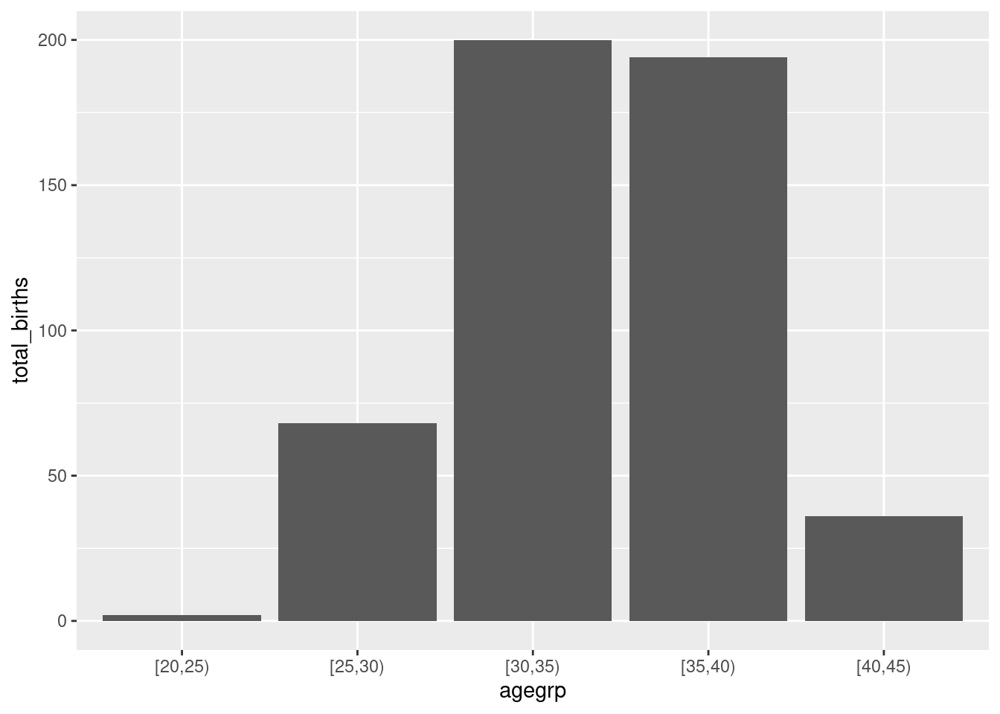
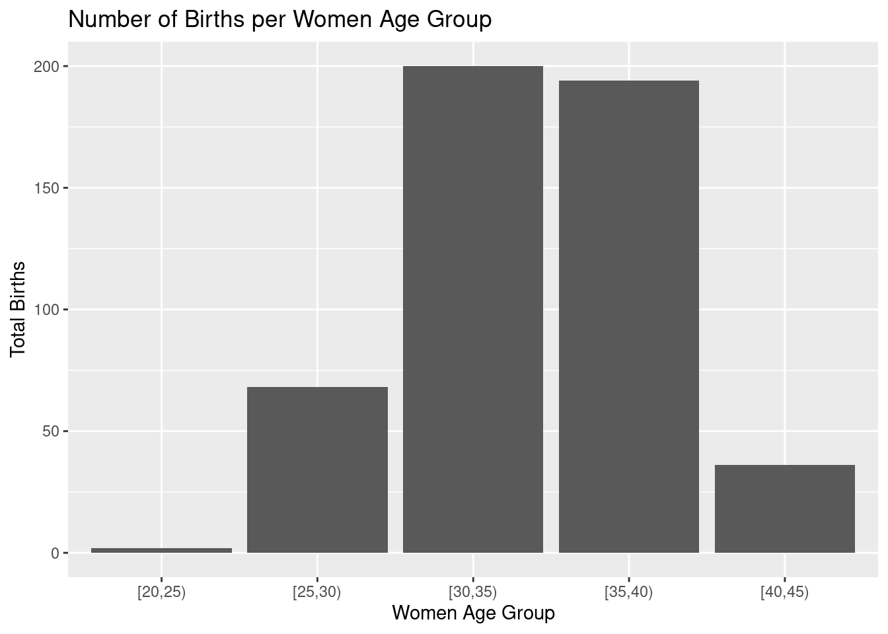

Chapter 3 Data manipulation with tidyverse
3.1 Introduction
In this chapter we will produce more or less the same outputs than in chapter 1.2 and 1.4 using
tidyverse packages framework.
The main objective of this exercise is to get familiar you with some of the main tidyverse features.
This is an optional practical for participants having already good basic R skills.
> All the rest of the course can be done without knowledge of tidyverse.
3.2 The births data
We will work with births data-set from Epi package.
First of all, load the Epi and tidyverse packages.
Then load the births data-set.
You can type ?birth in the R console to get a description of the birth data-set. (Alternatively, you can refer to chapter 1.3.2)
3.3 tibble vs data.frame
Most dplyr functions outputs return tibble object instead of
data.frame.
Inspect the class and characteristics of the births object.
Note: As any R object this can be summarized using str function.
births object is a 500 x 8 data.frame.
Let’s convert births to tibble format with as_tibble function.
births_tbl <- as_tibble(births)
class(births_tbl)
births_tbl
# another way to visualize data set is to use glimpse function
glimpse(births_tbl)You can see that tibble objects inherits from data.frame which implies that all functions
working with data.frame objects will work with tibble. The opposite is
not necessary true. tibble has a couple of extra features compared to classical
data.frame. One of them is a slightly more user-friendly console print. The main
difference is probably that tibble objects supports grouping/nesting features.
Some examples we be done will see latter on.
3.4 Piping functions
This is one of the most popular features of tidyverse grammar. It enables function chaining in
R. Function output is transparently passed as input to the next function and so on.
It can help to make the code more comprehensive and readable.
Here is an example of classic vs piped functions.
Note: By default the chained object is given as the first argument to the following
function.
You can use . if this is not the case.
Here is a dummy example where we do not give the first argument to head function but the second one.
This can also be achieves with base pipe |> with two differences
- The place holder is an underscore
_not a dot.. This is a deliberate design choice to help people with less acute eyesight - The argument must be named
3.5 mutate columns
mutate will allow you to add and or modify columns in a tibble.
Let’s create 2 new variables :
agegrp(5 years mother’s age group)gest4(gestation time split in 4 categories)
And modify 2 others:
hyp(factor version ofhyp;normalvshyper)sex(factor version ofsex;MvsF)
births_tbl <-
births_tbl |>
mutate(
# modify hyp varible (conversion into factor)
hyp =
factor(
hyp,
levels = c(0, 1),
labels = c("normal", "hyper")
),
# creating a new variable aggrep
agegrp =
cut(
matage,
breaks = c(20, 25, 30, 35, 40, 45),
right = FALSE
),
# modify sex variable (conversion into factor)
sex =
factor(
sex,
levels = c(1, 2),
labels = c("M", "F")
),
# creating a new variable gest4 with case_when instead of cut
gest4 =
case_when(
gestwks < 25 ~ "less than 25 weeks",
gestwks >= 25 & gestwks < 30 ~ "25-30 weeks",
gestwks >= 30 & gestwks < 35 ~ "30-35 weeks",
gestwks >= 35 ~ "more than 35 weeks"
)
)
births_tblYou can see as header the type of data contained in each column.
For instance <dbl> stands for double (i.e. numeric value) and fct
stands for factor.
In R data.frame (/ tibble) data type
must be the same within a column (e.g. numeric only) but can be of different type across columns. (note: matrix object supports only one type of data)
Note that case_when function do not return a factor but a character variable in this case.
You will have to force the conversion from character to factor if needed.
3.6 select columns, filter and arrange rows
select is used for column sub-setting while filter is for row sub-setting.
They are equivalent to the [] in R base language.
Let’s display a table where only babies’ id, sex, bweight and mothers’
agegrp are kept for babies with a bweight above 4000g.
births_tbl |>
# select only id, women age group, sex
# and birth weight of the baby
select(id, agegrp, sex, bweight) |>
# keep only babies weighing more than 4000g
filter(bweight > 4000)select can also be useful to reorder and rename columns.
arrange is a nice feature to reorder observations according to chosen attributes.
Let’s rename agegrp, sex and bweight with better looking labels (e.g. Age group, Sex, Birth weight) and reorder the table according to babies’ decreasing birth weight.
births_tbl |>
# select only id, women age group, sex
# and birth weight of the baby
select(
id,
"Age group" = agegrp,
Sex = sex,
"Birth weight" = bweight
) |>
# rearrange rows to put the heaviest newborn on top
arrange(desc(`Birth weight`))Note: tibble supports blank spaces in the column names which can be handy for final table
rendering. When you want to work with columns with blank spaces, do not forget to use the \(``\)
(back-quote).
Try to produce the same table but arranging the rows by decreasing birth weights within each sex.
births_tbl |>
# select only id, women age group, sex
# and birth weight of the baby
select(
id,
"Age group" = agegrp,
Sex = sex,
"Birth weight" = bweight
) |>
# rearrange rows to put the heaviest newborn on top
arrange(Sex, desc(`Birth weight`))You can arrange the tibble according to more than one column.
3.7 group_by and summarise data
One greatest features of dplyr is the ability to aggregate data sharing a common attribute to process per group operations.
Here we want to compute the number of boys and girls in the data-set.
The idea here is to split the births table in two groups. One with the boys, the other with the girls and to count the number of rows in each group.
births.01 <-
births_tbl |>
# group the data according to the sex attribute
group_by(sex) |>
# count the number of rows/individuals in each group
summarise(
count = n()
)
births.01Note: n function is equivalent to nrow
Now we have the number of boys and girls, we can compute the distribution (in percentage) of newborns per sex.
Trick: most of dplyr functions can be combined with a column selection execution statement using
across function. This can be very handy in some cases.
As an example below a code to compute the sum of every birth.02 numerical columns (numerical columns only)
births.03 <-
births_tbl |>
select(gest4, sex, gestwks, bweight, matage) |>
group_by(gest4, sex) |>
summarise(
across(
where(is.numeric),
~ mean(.x, na.rm = TRUE)
),
.groups = "drop"
)
births.03across function supports the purrr-style lambda format, e.g. ~ mean(.x, na.rm = TRUE)
where .x refers to the values from the data set to be passed to the function. This is a common notation you will find across several tidyverse functions.
Some other functions ending by _with can be used conditionally within dplyr.
As an example we can rename only columns which are not numeric at once (here we want to code all column names using upper characters) using
the combination of rename_with and where.
Let’s now compute the number of births and the mean birth weight according to newborn gender.
births.05 <-
births_tbl |>
group_by(sex) |>
summarise(
count = n(),
bweight.mean = mean(bweight)
)
births.05With births.05 table, compute the global mean birth weight.
Note: with such a table the mean baby’s birth weight have to be weighted by number of boys and girls (see. ?weighted.mean).
3.8 Multiple grouping
In some cases, we can be interested in looking at more than a single strata. This can be achieved using multiple grouping. Let’s count the number of births per gender and birth weight class (low vs not low)
## `summarise()` has grouped output by 'sex'. You can override using
## the `.groups` argument.Try then to compute the percentage of babies in each group. Look at the difference between the 2 following command lines:
births.06 |>
mutate(
percent = count / sum(count) * 100
)
births.06 |>
ungroup() |>
mutate(
percent = count / sum(count) * 100
)Are the results the same?
Note: summarizing a data-set will remove the last level of grouping but not the other ones if multiple grouping has been performed. In some cases you might have to explicitly ungroup your data.frame before doing further calculations.
In the previous examples, if you do not ungroup the data-set, percentages are computed per gender. Ungrouping will let you compute the overall
percentages.
Trick: a good practice is to always ungroup the summarized dataset in order to prevent form confusion. You can do it using the .group = 'drop' option in summarize().
# this tibble will still be grouped by sex
births_tbl |>
group_by(sex, lowbw) |>
summarise(
count = n()
)
# this tibble will be group free
births_tbl |>
group_by(sex, lowbw) |>
summarise(
count = n(),
.groups = "drop"
)The same exercise can be done using gestation time group (gest4) as stratifying variable.
Lets compute number of births and mean birth weights according to gestation time category.
Any trend?
It seems that birth weight increases with gestation time.
We can also spot that in our data-set the gestation time is missing for 10 newborns.
We will do not consider this observation for the rest of the exercise.
Lets cross-tabulate the birth weight category and the gestation time groups.
births_tbl |>
# keep only the newborn with defined gesational time category
filter(
!is.na(gest4)
) |>
group_by(lowbw, gest4) |>
# compute the number of babies in each cross category
summarise(
count = n()
) |>
# compute the percentage of babies in each gestational
# time category per birth weight category
mutate(
percent = count / sum(count, na.rm = TRUE)
)## `summarise()` has grouped output by 'lowbw'. You can override
## using the `.groups` argument.Similarly we can be interested in the birth weight distribution per gestational time.
births_tbl |>
filter(
!is.na(gest4)
) |>
group_by(gest4, lowbw) |>
summarise(
count = n()
) |>
# compute the percentage of babies in each birth weight category
# per gestational time category
mutate(
percent = count / sum(count, na.rm = TRUE)
)## `summarise()` has grouped output by 'gest4'. You can override
## using the `.groups` argument.Note: grouping order matters! and can be confusing so think about ungrouping intermediate tables.
3.9 Bind and join tables
Another nice feature of dplyr is tables binding and joining. To practice we will create two tibbles:
agean individual database which containspid(unique individuals id) and theiragein yearcenteran study center database which containspid(unique individuals id) andcenter(the center where an individual is registered coded as a letter)
age <-
tibble(
pid = 1:6,
age = sample(15:25, size = 6, replace = TRUE)
)
center <-
tibble(
pid = c(1, 2, 3, 4, 10),
center = c("A", "B", "A", "B", "C")
)
age
centerNow the tables are define we will try to make the linkage between individuals ages and the center
they belong to.
First of all let’s have a look to bind_rows function.
Is it useful? Here not really because we do not want to bind the data-set (but join them instead) but that can be in other situations (e.g. several individuals data base to merge..).
Note: in bind_rows, if columns names do not match, they are fill with NA.
Here we want to join the 2 tibble according to their common attribute pid. Depending
on the context you can be interested in joining tables differently. Have a look at the differences
between left_join, full_join and inner_join.
# all individuals from ages are kept
left_join(age, center, by = c("pid"))
# everithing is kept
full_join(age, center, by = c("pid"))
# only the individuals present in both dataset are kept
inner_join(age, center, by = c("pid"))Can you spot the differences between the commands above? As an exercise, you can try to compute the individuals’ mean age per center.
Note: the by argument indicates which column should be use to make the join. In some
cases, you might have to uses several columns to match (e.g. per sex and age group), this
can be easily done specifying a vector of column names.
From now on, we will consider other packages than dplyr from the tidyverse suits.
3.10 Data Visualization with ggplot2
One of the package that have contributed to tidyverse success is for sure ggplot2.
We will go more into the details on how to produce advanced graphs with ggplot2 in another practical.
Let’s just have a quick example of graphic creation using ggplot2.
Let’s draw a bar plot to visualize the number of births by women age group.
First you have to create a table with the number of birth per age group.
 This graph can be customize adding labels and title to the plot:
(gg.02 <-
gg.01 +
xlab("Women Age Group") +
ylab("Total Births") +
ggtitle("Number of Births per Women Age Group"))
As you can see, plots from ggplot family are built incrementally using the + operator for each additional element.
3.11 pivoting data with tidyr
dplyr often comes with its good friend tidyr when we are performing data manipulation. tidyr main features is to reshape tables from long to wide format and vis-versa. Let’s have an example.
Let’s transform in wide format the previously created birth_per_ageg table.
We want to have a table with one column per age group containing the total_births numbers.
birth_per_ageg
birth_per_ageg_wide <-
birth_per_ageg |>
pivot_wider(
names_from = "agegrp",
values_from = "total_births"
)
birth_per_ageg_wideThis table can easily be formatted back in long format using pivot_longer function:
birth_per_ageg_long <-
birth_per_ageg_wide |>
pivot_longer(
cols = 1:5,
names_to = "agegrp",
values_to = "total_births"
)
birth_per_ageg_longAre the tables birth_per_ageg and birth_per_ageg_long identical?
Not really because the factor type of agegrp column has been lost during the transformation.
Let’s convert agegrp column into a factor. Is the new table identical to birth_per_ageg ?
birth_per_ageg_long_02 <-
birth_per_ageg_long |>
mutate(agegrp = as.factor(agegrp))
identical(birth_per_ageg, birth_per_ageg_long_02)Here we have seen the simplest example you can have of table reshaping with tidyr. If you are interested check the dedicated vignette (vignette("pivot")) to learn how to perform more advanced tables reshaping.
3.12 reading files with readr
Another package from tidyverse that can be introduced here is readr that contains a set of functions equivalent to the core R data.frame reading functions (e.g. read.table(), read.csv(), read.delim(), …). The main change is that data are loaded in R as tibble instead of data.frame, type of variables (columns) are guessed if possible, and some extra data checking tests are performed.
Let’s explore this differences with fem dataset available in data directory.
# read a csv using core R
fem.csv.core <- read.csv("data/fem.csv")
# read a csv using tidyverse
fem.csv.tidy <- read_csv("data/fem.csv")## Rows: 118 Columns: 9
## ── Column specification ──────────────────────────────────────────
## Delimiter: ","
## dbl (9): ID, AGE, IQ, ANXIETY, DEPRESS, SLEEP, SEX, LIFE, WEIGHT
##
## ℹ Use `spec()` to retrieve the full column specification for this data.
## ℹ Specify the column types or set `show_col_types = FALSE` to quiet this message.# compare
fem.csv.core
fem.csv.tidy
# table dimensions
dim(fem.csv.core)
dim(fem.csv.tidy)
# compare column types
map(fem.csv.core, class)
map(fem.csv.tidy, class)note: in case you do not fully get the last lines and the map() call, it will be explained in the next section on purrr package.
Here we see that the only difference is the type of object loaded data.frame vs tibble and the default type chosen to cast numeric values (integer vs numeric).
What about loading occoh.txt you will be using in some other practical in the coming days.
# read a csv using core R
occoh.txt.core <- read.table("data/occoh.txt")
# read a csv using tidyverse
occoh.txt.tidy <- read_table("data/occoh.txt")##
## ── Column specification ──────────────────────────────────────────
## cols(
## id = col_double(),
## birth = col_double(),
## entry = col_date(format = ""),
## exit = col_date(format = ""),
## death = col_date(format = ""),
## chdeath = col_double()
## )## Warning: 1501 parsing failures.
## row col expected actual file
## 1 -- 6 columns 7 columns 'data/occoh.txt'
## 2 -- 6 columns 7 columns 'data/occoh.txt'
## 3 -- 6 columns 7 columns 'data/occoh.txt'
## 4 -- 6 columns 7 columns 'data/occoh.txt'
## 5 -- 6 columns 7 columns 'data/occoh.txt'
## ... ... ......... ......... ................
## See problems(...) for more details.##
## ── Column specification ──────────────────────────────────────────
## cols(
## id = col_double(),
## birth = col_double(),
## entry = col_date(format = ""),
## exit = col_date(format = ""),
## death = col_date(format = ""),
## chdeath = col_double()
## )## Warning: 1501 parsing failures.
## row col expected actual file
## 1 -- 6 columns 7 columns 'data/occoh.txt'
## 2 -- 6 columns 7 columns 'data/occoh.txt'
## 3 -- 6 columns 7 columns 'data/occoh.txt'
## 4 -- 6 columns 7 columns 'data/occoh.txt'
## 5 -- 6 columns 7 columns 'data/occoh.txt'
## ... ... ......... ......... ................
## See problems(...) for more details.# compare
occoh.txt.core
occoh.txt.tidy
# table dimensions
dim(occoh.txt.core)
dim(occoh.txt.tidy)
# compare column types
map(occoh.txt.core, class)
map(occoh.txt.tidy, class)As you can see, in addition to inferring the type of columns in the input data (here some dates), using readr to load you data-set can help you to detect inconsistencies in input data formatting (there are no true problem here).
If you are interested, you can explore the other functions of readr and see how you can tune it.
3.13 String manipulation with stringr
Another popular tidyverse popular package is stringr package. This package is specialized in the string manipulation. Here are couple of examples.
Let’s create a character vector with the following elements representing country names: “Estonia”, “Finland”, “Denmark”, “United Kingdom”, “France”.
With stringr functions perform the following actions.
Extract the first three characters from each country name:
Convert all country names to uppercase:
Replace “United” with “Utd” in each country name:
Find the positions of the letter “n” in each country name:
As you can see, the output of str_locate_all is a list (one element per character string) containing a 2 column table with one line for each match. The first column (start) being the position of the beginning of the match and the second one (end) being the end of the match. In our case, since we are searching for a single character match, this 2 indexes are always the same.
Count the number of characters in each country name:
These examples demonstrate various string manipulation operations using the stringr package. You can modify the exercises, combine several operations or explore other string manipulation functions provided by stringr to further practice and enhance your skills in manipulating and analyzing text data.
3.14 purrr package to apply functions to list
Among my favorite tidyverse packages, you will find purrr. This package contains
several functions that are very similar to lapply function.
Apply a function to each element of the vector using map(). Here producing the mean of some grades per class:
# define the grade dataset
grades <-
list(
c1 = c(80, 85, 90),
c2 = c(75, 70, 85, 88),
c3 = c(90, 85, 95)
)
# compute grades
mean_grades <- map(grades, mean)By default map() return a list. One of the nice feature of purrr functions is to be able to specify the type of output you want (e.g. _dbl for numeric, _chr for characters, …).
Check and try to explain the differences between the following command lines:
## Warning: Automatic coercion from double to character was deprecated in
## purrr 1.0.0.
## ℹ Please use an explicit call to `as.character()` within
## `map_chr()` instead.
## Call `lifecycle::last_lifecycle_warnings()` to see where this
## warning was generated.Other nice features of map like functions is he availability to support more than one argument.
map2() for 2 arguments and pmap() for more than 2. This can be very handy in some conditions.
If you are interested you can have a look to this function help file and play with the examples.
purrr package has also a set of functions that can be used to apply iteratively a function using reduce and/or accumulate. The 2 functions behave the same way, it takes the 2 first element of a list, apply a function taking 2 arguments. The results is combined with the third element of the list and given as input to the same function and so on.. The only difference is that accumulate return intermediate results while reduce return only the final results.
Here an example of the cumulative product of the 10 first numbers.
purrr have many of others useful features. Please check the dedicated documentation if you want to go further with this package.
3.15 Bonus: Rendering tables
Once you have produced a nice data-set we can be interested in rendering it in a nice format that can meet presentation/publication expectations. The kableExtra table can be useful to achieve this goal.
# if(!require(kableExtra)) install.packages('kableExtra')
library(kableExtra)
births.08 <-
births_tbl |>
filter(
!is.na(gest4)
) |>
group_by(gest4) |>
summarise(
N = n()
) |>
mutate(
`(%)` = (N / sum(N)) |> scales::percent()
)
# default
births.08
# create an html version of the table and save it on the hard drive
births.08 |>
kable() |>
kable_styling(
bootstrap_options =
c("striped", "hover", "condensed", "responsive"),
full_width = FALSE
) |>
save_kable(file = "births.08.html", self_contained = TRUE)note: One other very cool package to produce advance formatted Excel spreadsheet I am using more and more is openxlsx. Check it out if you are interested.